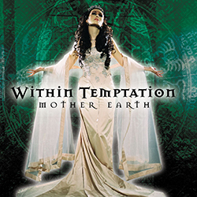

Within Temptation Hydra (Japan_Edition) Frontal 2014

Within Temptation Mother earth 2000
Formulario corto
manda tu mensaje a Sharon den Adel:
Hacerca de...
Sharon Janny den Adel (n. Waddinxveen, Países Bajos; 12 de julio de 1974), conocida popularmente como Sharon den Adel, es una cantautora y diseñadora de modas.
Desde los 14 años participó en algunos proyectos de rock hasta que en 1996 con su pareja, Robert Westerholt, fundó la banda de metal sinfónico/rock sinfónico Within Temptation. Al lado de ellos ha vendido más de 3 millones de discos alrededor del mundo.
Define su propio trabajo como épico y cinemático
La primera vez que Sharon subió a un escenario fue durante un karaoke con un tema del grupo “T’Pau”.1 A los 13 años se integró a una banda de blues/rock llamada Kashiro10 tocando el teclado porque no se atrevía a cantar:
Por alguna razón que no puedo explicar, al principio no quería decirle a nadie que podía cantar, o que quería cantar. Entonces, en vez de eso opté por tocar los teclados en la banda, y era verdaderamente terrible.
Interpretaban canciones de Van Halen y Stevie Ray Vaughan, sin embargo, la banda no tenía vocalista así que finalmente Sharon se ofreció a cantar.